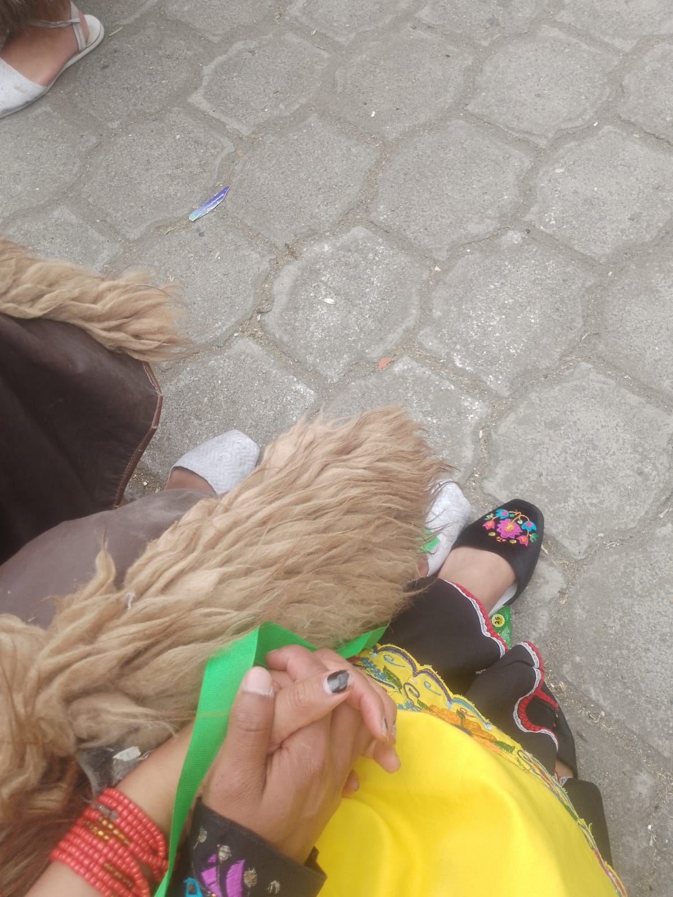
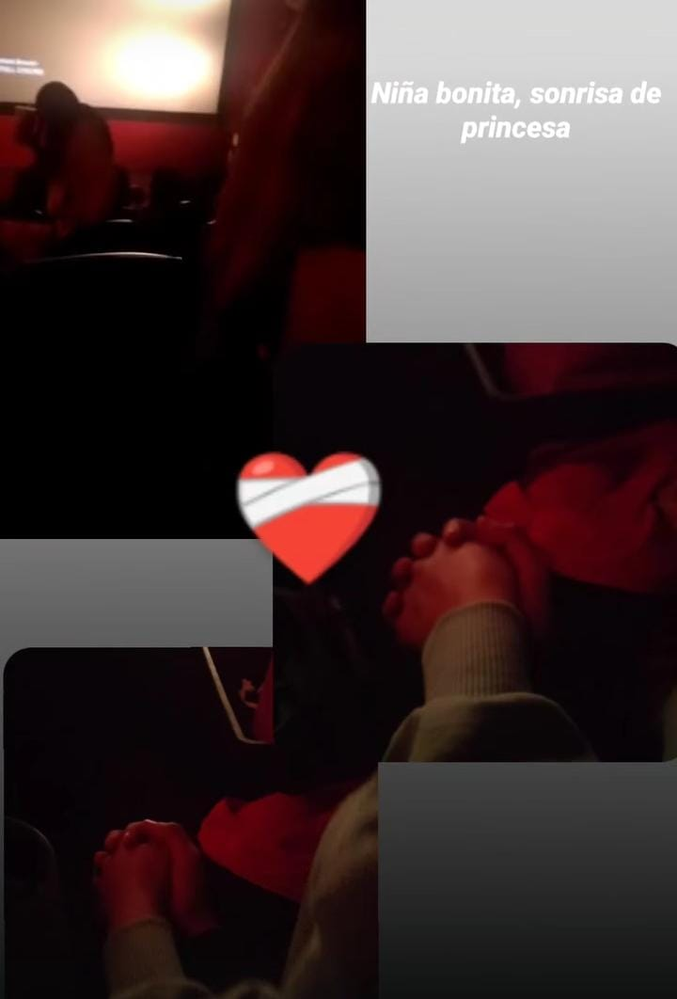
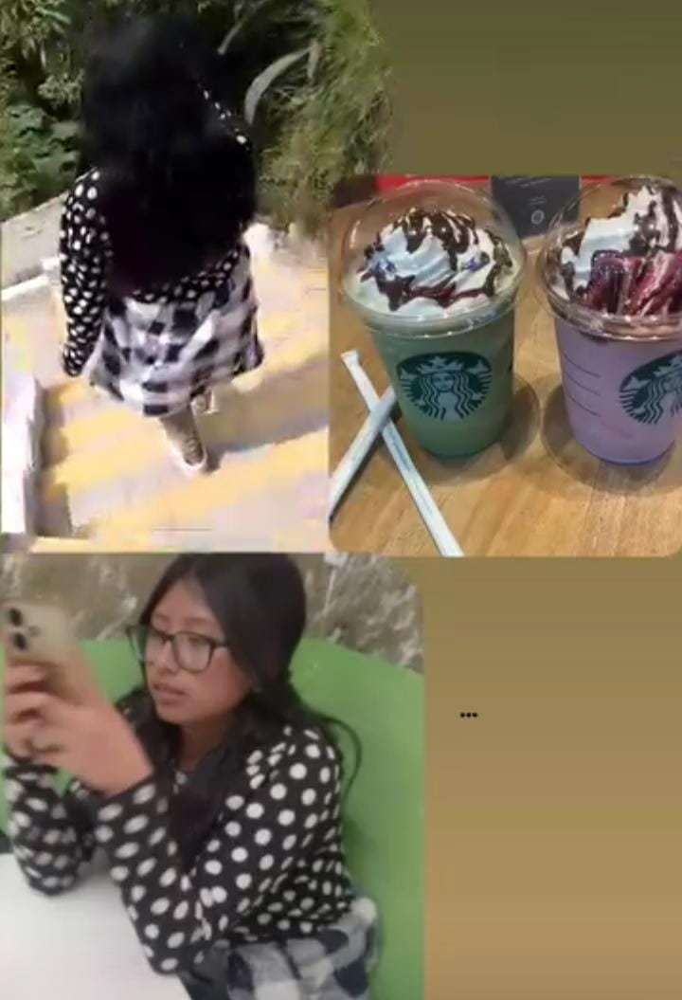
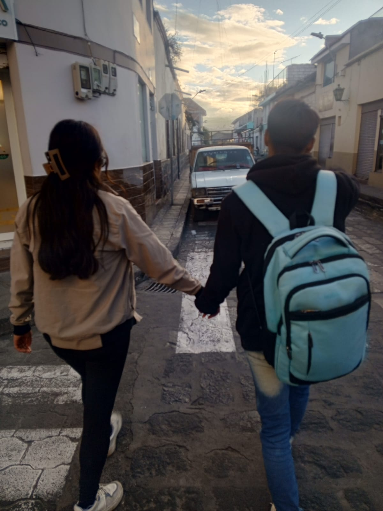

¿Recuerdas como comenzó todo?
Pues como olvidar el día que nos conocimos jaja fue algo inesperado. Te conocí un día de presentación, te juro que ese día no iba a ir a bailar sin pensarlo comenzamos a dialogar bueno tu jeje nos contabas lo que te habia pasado con M, y yo tambien hable de lo que me pasó JAJAJ aun recuerdo que me diste cogiendo una gaseosa jeje y para que favor si se me fue en el taxi jaja Puedes creer que aun no me lo creo, cuando me contaste como te enamoraste de mi jeje, y tambien esperar el dia de ensayos para volvernos a ver jaja te cargue jjj algo muy loco amor apenas te habia conocido la anterior semana y ya te cargue jeje ayy que locura no lo crees??

Nuestra primera salida como amigos
Se que suena loco que aun recuerde esto jeje El día que nos pusimos de acuerdo para ir al cine jajsjs, bueno yo te dije ya que seextrenaa la pelicula de Stich jjjj y bueno te dije a ti si podiamos ir jeje y justo ese dia tenian presentación y tu te regresaste ese dia rapido a la casita, te bañaste, te cambiaste y veniste al cine para verla. no te puedo negar que ese día estaba nerviosa jeje. Sé que aún no éramos nada, apenas nos estábamos conociendo, pero verte agarrar mi manito era ayyy y verte tomar fotos no sé cómo explicarte jjj. Era algo nuevo para mi ya que la unica te tomaba fotos era yo jeje y ver que tu pareja lo haga y mas contigo me sorprendi la verdad ya que como te dije no eramos nada pero lo hiciste

Nuestra primera salida como novios
Nose si aun recueras la primera cita qu tuvimos que fue ir a las Cascadas de Tilipulo Aunque no lo creas si me di cuenta que me estabas grabando, pero no queria arruinar el momento ya que por primera me sentia bien.

Uno de los recuerdos inolvidables que tengo
Un recuerdo inolvidable será cuando me trajiste al Patrón el día de mi cumpleaños, fue algo muy bonito, nadie había hecho tanto como tú lo hiciste, fue el mejor cumpleaños que tuve.Aunque no te puedo negar si me enoje al principio hasta queria llorar ya que fue algo muy inesperado, como te dije cuando me conociste, no me gusta que gasten en mi, porque me hace sentir apenada. Pero no es el único recuerdo mi amor que tengo, son varios ya que cada que salimos creamos nuevos recuerdos, que espero que perduren por muchos años, porque si quiero quedarme contigo espero que tú igual pienses lo mismo bebé.

Mi primer Año Nuevo a tu lado
No puedo creer que ya en poco tiempo vamos a ir por nuestros 2 año nuevo jeje, bueno el pPrimera Año que pase contigo ir a ver las viudas, ir a ver la ciudad desde las letras, que me diste un gran abrazo ese dia FUE EL MEJOR ULTIMO DIA DEL AÑO ya que aunque no lo ibamos a psar juntos, lo iva a inicar con el niño que me dio luz en mi oscuridad, pero fue al hermoso empezar el Año nuevo contigo aunque por videollamada Apesar de la pelea del anterior dia no impidio que intentemos nuevamente y te lo agradezco bastante

Mi primer Año Nuevo a tu lado
Uno de los recuerdos será el día que nos pusimos de acuerdo para ir al cine jajsjs, no te puedo negar que ese día estaba nerviosa jeje. Sé que aún no éramos nada, apenas nos estábamos conociendo, pero verte agarrar mi manito era ayyy no sé cómo explicarte jjj.
Un regalo inesperado
Un regalo que me diste fue este gran ramo de girasoles eternas, no me lo esperaba mi amor serte sincera como tu me dijiste que era un encarg, y resulto ser este gran regalo Me gusto muchisimoo, jeje como olvidar los nervios que tenia al llevar ami casita, como ien sabias mis papás aun no sabiande lo nuestro pero aun asi me gusto demasiado
Lo que siento por ti
Nunca pensé enamorarme así de ti amorcito, fue tan repentino. Sin pensar que escondimos nuestro noviazgo porque yo te lo pedí, pero un día sin querer todos se enteraron que estábamos juntos. Te amo, no sé cómo expresarte mi niño el gran amor que te tengo, perdóname por mis celos jaja, mis enojos; es que no me gusta que menciones a otra mujer ñoño, me da unos celos. Y no te preocupes amorcitoshi comentas en tus tik toks a otras chicas que estan bonitas, no te juzgo mi amor ultimamente no estoy del todo bonita, pero al ver a las chicas si me pongo a comparar, poque por eso esque tu les coentas eso, se supone que yo debo ser la envidia de otras chicas al tenerte a mi lado y no ser la chica a la que dicen el novio de ella me comento que soy bonita, no te voy a reclamar mi amorcito mio, Intentare controlar mis celos, aunque si me costara amor no te miento, si antes tu les ponias un limite a las chicas que hacian eso, ahora les dejas hacerlo, se que debo aceptar que debes tener amigas y eso bebe... confio en ti Eres alguen muy especial para mi bebe, ahi noc como demostrarte el gran amor que te tengo, decirte que te amo demasiado y me doleria muchisimo que tus bellos ojitos ya no me miren a mi. Como te eh di ho en aquellas despedidas yo quiero, quisiera un futuro a tu lado, se que aun eestamos jovenes pero ya no somos unos niños, para saber lo que queremos. Te eh demostrado de todas formas el amor que te tengo, se que aun me falta hacer cosas contigo y quisiera cumplirlas... Aunque no me creas mi amorcito, mi mami pregunta aveces por ti, de donde estas que estas haciendo Mi amor raro que mi mami pregunte eso sientete bien amorcitojaja te ganaste el cariño de la se puede decir la dura de la familia jsjs te ganaste su cariño Mi niño tú tranquilo como te dije, tranquilito, yo te voy a esperar hasta que acabes de trabajar. No te sientas avergonzado del trabajo que haces, si estás sucio con las manos manchadas yo te voy a abrazar y te besaré porque me importas bastante. No me importa cómo estés, yo siempre estaré contigo apoyándote, porque sé que de eso se trata una relación: estar siempre al lado de la persona que ames a pesar de todo. No creas que estás solo, tú mira atrás y aquí estaré, yo estaré en todo tu proceso amorcito. Quiero estar en todos tus logros, como te dije amor me siento muy orgullosa de ti. Sé que a veces tenemos nuestros enojos, pero no quiero que nos vayamos a dormir enojados, no me gusta eso. Quiero que hablemos, solucionemos, e ir a dormir felices y tranquilos. Me siento muy orgullosa de tenerte a mi lado ya que tú estuviste conmigo en las malas y buenas, incluso cuando más te necesitaba. Gracias por aceptarme como soy amorcito. Espero que sí podamos ir a Baños y poder ver cómo es en la noche, y más va a ser maravilloso ya que te tengo a ti a mi lado. Nunca te vayas amorcito de mi vidaaaa
